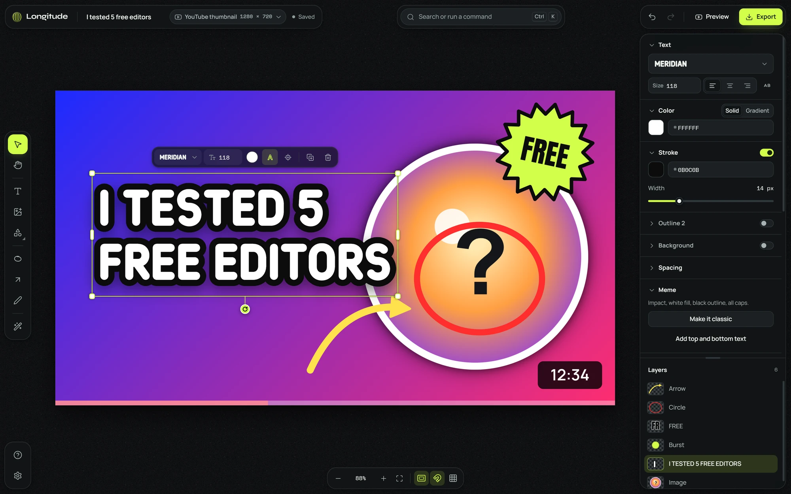
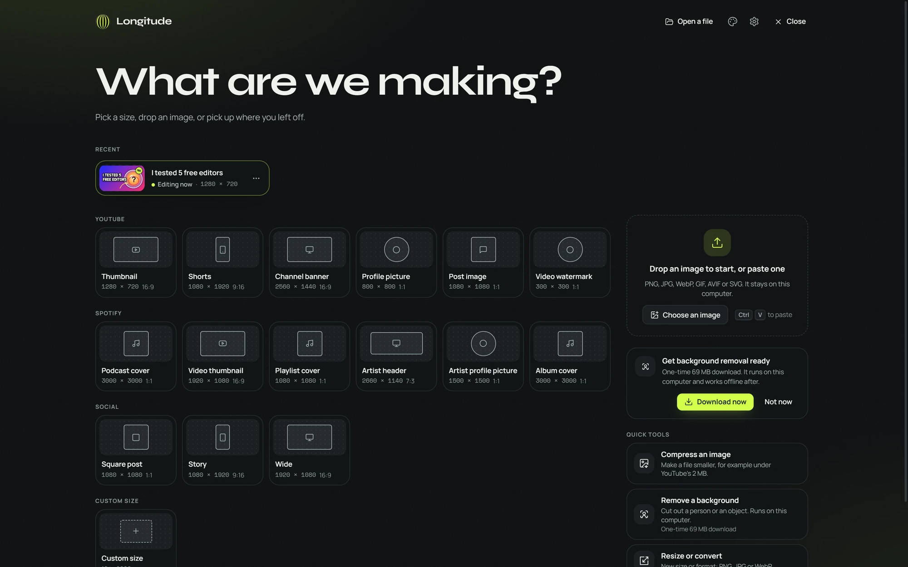
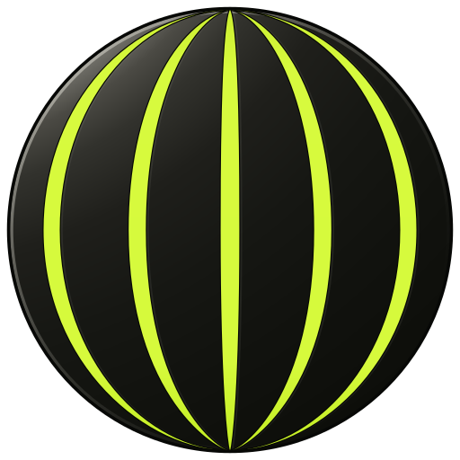

Thumbnails and covers. No fees, nothing uploaded.
Longitude is a small, open-source image editor for YouTube thumbnails and Spotify covers that runs on your own computer, with no account and no subscription.
36 MB · Windows 10 and 11
Chrome, Edge or Firefox · nothing to install
The installer is not code-signed yet. If Windows says “Windows protected your PC”, choose More info, then Run anyway.

What it does
The tools a thumbnail needs
Every action is a command: Ctrl K finds it, and the tooltips show the shortcut.
-
Your own images and fonts
PNG, JPEG, WebP, GIF, AVIF, BMP and SVG, plus any TTF, OTF, WOFF or WOFF2 font you drop in.
-
Snap guides
Layers pull to the center and to each other. A lime line shows when something is centered.
-
Stroked text
Stroke, a second outline, shadow, glow and a background pill, edited on the canvas.
-
Highlight circles and arrows
Circle the thing that matters, then point at it with an arrow you can bend.
-
Background removal on your computer
One click cuts out a person or an object. The image never leaves your computer.
-
Export under 2 MB
PNG, JPG or WebP, with “fit under 2 MB” for YouTube and a 256-color PNG option.
-
Feed preview
See your design at real size in a mock YouTube home grid, on a phone or in a Spotify library.
-
Quick tools
Compress a batch of images, remove a background, or resize and convert, without opening a design.
Presets
Start at the right size
Pick a size, drop an image, or pick up where you left off. Every preset is drawn to scale, and safe-zone overlays show what the platform covers, like the duration badge on a thumbnail.
- YouTube thumbnail 1280 × 720
- Shorts 1080 × 1920
- Channel banner 2560 × 1440
- Podcast cover 3000 × 3000
- Playlist cover 1080 × 1080
- Custom 16 to 8000 px

Free and open source
Yours to use, read and change
Longitude is plain files with no build step. Read the code, run it from the folder, or make it your own with a mod.
-
MIT license
Use it for anything, including paid work. The bundled fonts are free to use in your thumbnails.
-
No account
Nothing to sign up for. Designs are saved on your computer and leave it only when you export them.
-
No telemetry
No analytics. The desktop app looks for a newer release once a day, and you can turn that off.
-
Mods
Packs add themes, presets and palettes. Code mods get a small, versioned API for commands, tools and filters.

Make your next thumbnail here
Free on Windows and in the browser. The desktop app includes background removal, so it works offline right after install. The browser version downloads it once, about 69 MB, the first time you use it.